3 Perception
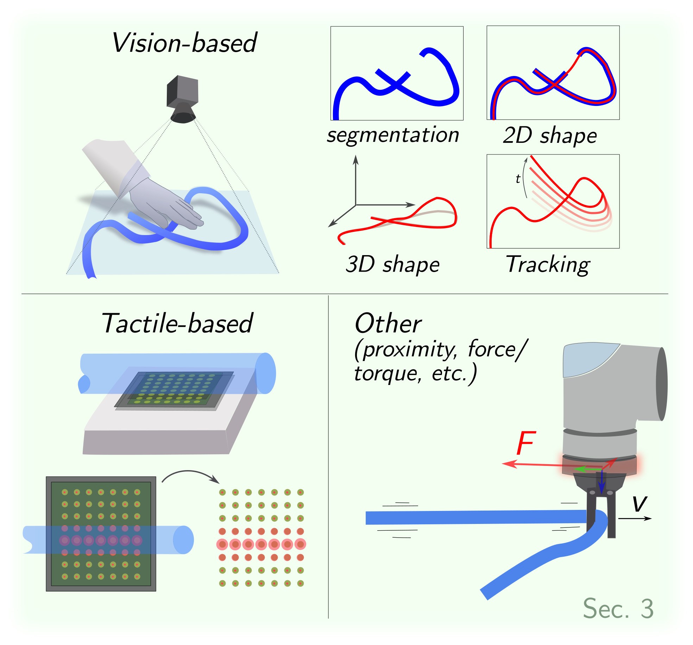
3.1 Vision-based Perception
3.1.1 Data-driven Segmentation.
Among various vision tasks, some provide limited utility for DLO manipulation. For instance, while object detection can generate bounding boxes around DLOs, these often fail to capture precise information about the DLO shape and configuration, details crucial for manipulation. In contrast, semantic segmentation, and particularly instance segmentation, deliver richer pixel-level information by accurately identifying DLO regions within an image, as illustrated in Fig. 2.
Semantic segmentation involves classifying each pixel of an image with a unique class, e.g. the DLO class or the background class. Instance segmentation further distinguishes individual DLO objects by assigning unique identifiers to each instance, allowing differentiation among multiple DLOs in the scene.
Traditional segmentation techniques, like color-based thresholding or background difference, rely on substantial assumptions about the scene, making them usually unsuitable as general solutions. Recently, deep learning approaches have demonstrated their viability in effectively solving some of the segmentation challenges related to DLOs, driving research toward data-driven segmentation of DLOs (Zanella et al., 2021; Dirr et al., 2023; Caporali et al., 2023; Wu et al., 2022; Dai et al., 2022; Song et al., 2019; Huang et al., 2024; Jin et al., 2022; Sun et al., 2024).
Dataset Generation. The key issue in deep learning approaches increasingly revolves around the challenge of gathering and labeling large amounts of data for training purposes. Several works rely on manual annotation procedures to generate a training dataset, as seen in (Wu et al., 2022; Dai et al., 2022; Song et al., 2019; Huang et al., 2024). However, the manual process is notoriously tedious, inaccurate, time-consuming, and not scalable. Furthermore, as visual perception tasks grow more complex (such as in DLO segmentation), the annotation effort becomes increasingly slow and challenging.
Some works have focused on investigating dataset-generation approaches that require minimal or, ideally, zero human intervention. In (Jin et al., 2022), a self-supervised method is presented that collects training images by moving a camera mounted on a robot arm. Initial labels are generated using color thresholding on a high-contrast DLO, and a deep-learning segmentation network trained on augmented data is employed to enhance the estimator’s ability to generalize across varying cable colors and backgrounds.
A similar approach is investigated in (Zanella et al., 2021), which proposes a two-phase data labeling method for semantic segmentation: first, foreground masks are created using color difference between the DLO and background; second, these masks are combined with synthetic backgrounds to form the training dataset. Initial images are collected with minimal human effort by moving the DLO against a uniform background, and the dataset is then augmented to improve generalization to new scenes.
Compared to (Jin et al., 2022), the method in (Zanella et al., 2021) enables generalization across the general DLO class and is not limited to specific scenes, due to the use of synthetic backgrounds. The main limitations of both (Jin et al., 2022) and (Zanella et al., 2021) are 1) susceptibility to incorrect labels due to color separation from video, which is sensitive to lighting and shadows, necessitating validation; and 2) the need for human intervention in data gathering, particularly for the movement and deformation of DLOs.
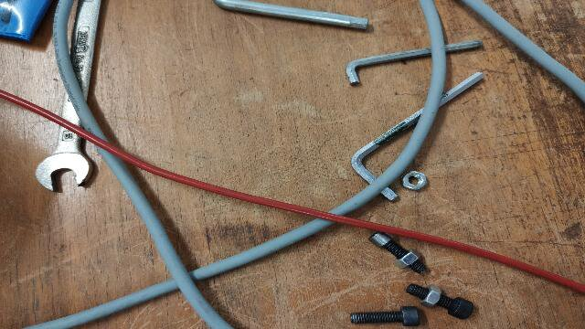
(RGB image)
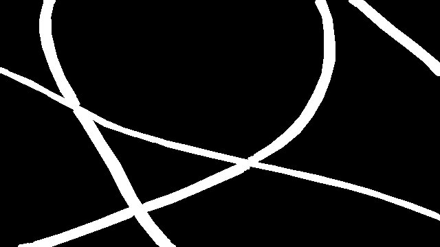
(semantic mask)
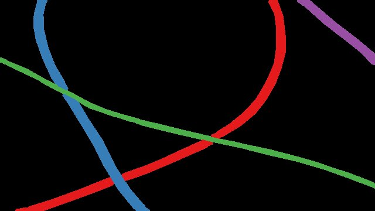
(instance mask)
To reduce human involvement in dataset generation, alternative approaches advocate fully synthetic processes using rendering engines (e.g., Blender) to create photorealistic datasets (Caporali et al., 2023; Dirr et al., 2023; Fresnillo et al., 2024). Synthetic images offer the added benefit of automatically generating accurate and error-free labels for both semantic and instance segmentation. Although labeling is eliminated, significant time is still required to set up and implement the synthetic scene generation pipeline. Additionally, the use of synthetic data raises concerns about the domain gap between simulated and real-world environments.
To mitigate the domain gap, Caporali et al., 2023 propose a weakly supervised method that leverages keypoint annotations on real DLO images captured from multiple viewpoints. Then, a neural network refines the sparse keypoint-based annotations into dense segmentation labels. Although these methods effectively capture real-world details, they require multiple annotations to account for scene variability, limiting their scalability. Nevertheless, small-scale real datasets remain valuable when combined with synthetic data to reduce the domain gap (Caporali et al., 2023).
Semantic Segmentation The semantic segmentation of DLOs is performed using off-the-shelf deep learning models based on Convolutional Neural Networks (CNNs): UNet (Ronneberger et al., 2015) in (Dai et al., 2022; Jin et al., 2022); FCN (Long et al., 2015) in (Wu et al., 2022); and DeepLabV3+ (Chen et al., 2018) in (Zanella et al., 2021; Dai et al., 2022; Caporali et al., 2023). A CNN-based encoder-decoder architecture is proposed in (Huang et al., 2024; Song et al., 2019).
Concerning real-world and synthetic datasets, both (Dai et al., 2022) and (Caporali et al., 2023) evaluate their respective synthetic datasets against the electrical wires dataset (featuring real DLOs images but with synthetic backgrounds) released by (Zanella et al., 2021). From the comparisons, synthetic images emerge as a viable alternative to real-world image labeling. Moreover, mixing synthetic images with real-world images is shown to improve segmentation performance compared to the synthetic-only case (Caporali et al., 2023).
Table 2. Summary of the main literature on 2D shape estimation of DLOs via vision-based sensors. The methods are presented in chronological order from the oldest (first row) to the newest (last row). Time inference scale: several seconds (★), real-time (★★★★).
| Reference | Acronym/ First Author Data-driven | Code Available Inference Time Pre-Processing | Image Simplification Core Procedure Crossing Order Determination\ (De Gregorio et al., 2018) | Ariadne | ✓ | ★ | endpoints detection | superpixels | tracing | - | |
|---|---|---|---|---|---|---|---|---|---|---|---|
| (Yan et al., 2020) | Yan et al. | ✓ | - | - | - | hierarchical update | - | ||||
| (Keipour et al., 2022) | Keipour et al. | ★★ | segmentation | skeleton | merging | - | |||||
| (Caporali et al., 2022) | Ariadne+ | ✓ | ✓ | ★★ | segmentation | superpixels | merging | patch classifier | |||
| (Caporali et al., 2022) | FASTDLO | ✓ | ✓ | ★★★ | segmentation | skeleton | merging | color deviation | |||
| (Huang et al., 2024) | Huang et al. | ✓ | - | - | skeleton | tracing | patch classifier | ||||
| (Kicki et al., 2023) | DLOFTBs | ✓ | ★★★★ | segmentation | skeleton | merging | - | ||||
| (Caporali et al., 2023) | RT-DLO | ✓ | ✓ | ★★★★ | segmentation | graph-based | merging | color deviation | |||
| (Choi et al., 2023) | mBEST | ✓ | ★★★★ | segmentation | skeleton | merging | color deviation | ||||
| (Fresnillo et al., 2023) | Fresnillo et al. | ✓ | ★ | - | - | tracing | - | ||||
| (Viswanath et al., 2023) | HANDLOOM | ✓ | ✓ | ★ | endpoints detection | skeleton | tracing | patch classifier |
Instance Segmentation. The pipelines introduced in Caporali et al., 2023 and Dirr et al., 2023 enable instance-wise mask generation using fully synthetic approaches. When applied to instance segmentation models (e.g., YOLACT (Bolya et al., 2019) in Caporali et al., 2023 and SOLOv2 (Wang et al., 2020) in Dirr et al., 2023), performance is generally weaker than in semantic segmentation tasks, particularly in scenarios where different DLOs intersect. This underscores the need for further research into fully deep-learning-based instance segmentation methods tailored to DLOs, or the exploration of alternative strategies, as discussed in Sec. 3.1.2.
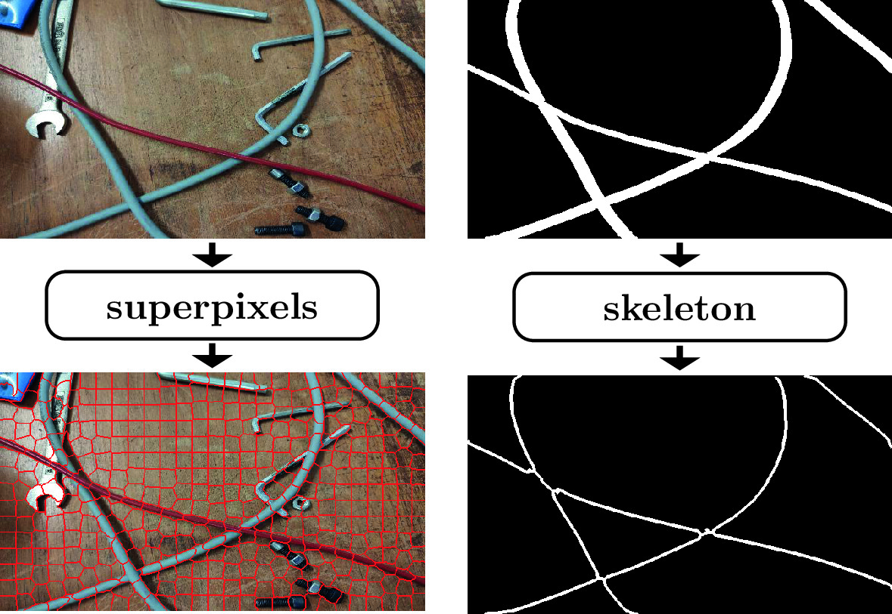
3.1.2 2D Shape Estimation.
Accurately estimating the shape of a DLO is crucial for effective manipulation. As a result, many vision-based algorithms have been developed to robustly extract the DLO’s state, typically represented as a sequence of keypoints that describe its shape and configuration. This section focuses on methods for 2D shape estimation, while 3D shape estimation techniques are covered separately in Sec. 3.1.3.
Table 2 provides an overview of the main approaches for 2D Shape Estimation. The table serves as a convenient reference, highlighting the data-driven nature of each method, along with its inference speed, pre-processing requirements, simplification and DLOs crossing strategies, and core procedures. The listed methods and their classification are further analyzed in the following discussion.
Pre-Processing. The majority of the approaches assume the utilization of a pre-processing step to generate a semantic segmentation mask of the scene. This mask is typically a binary image, where pixels corresponding to the DLO are labeled as 1, and background pixels as 0. This step is common across methods such as (Caporali et al., 2022; Caporali et al., 2022; Caporali et al., 2023), where a semantic segmentation network is employed (see Sec. 3.1.1), color-based thresholding methods as in (Choi et al., 2023) and (Keipour et al., 2022), or depth-thresholding approaches as in the case of the RGB-D camera in (Kicki et al., 2023).
In contrast, some approaches necessitate initialization with endpoint locations. Specifically, endpoints are supplied by specific CNN-based object detection networks in (De Gregorio et al., 2018) and (Viswanath et al., 2023). Similarly, external knowledge of the scene structure is harnessed in (Fresnillo et al., 2023) to initialize the algorithm.
Alternatively, Huang et al., 2024 uses a dedicated segmentation network to extract a gradient map of the DLOs directly from RGB images, eliminating separate segmentation and endpoint detection steps. However, its generalizability beyond training-like scenarios needs careful assessment (see Sec. 3.1.1). Yan et al., 2020 avoids both segmentation and endpoint detection but relies heavily on strong contrast between the DLO and background in its self-supervised process.
Image Simplification. The methods summarized in Table 2 propose various innovative solutions for DLO shape estimation, yet many approaches share common image processing strategies. A prevalent approach is to reduce image complexity using either superpixels or skeleton-based techniques. To highlight the differences between these two strategies, Fig. 3 presents a side-by-side comparison of their application to the same input image.
Superpixel segmentation, as used in De Gregorio et al., 2018 and Caporali et al., 2022, groups pixels with similar properties into coherent regions. De Gregorio et al., 2018 employs the SLIC algorithm (Achanta et al., 2012), while Caporali et al., 2022 uses MaskSLIC (Irving, 2016), which incorporates a binary mask to restrict focus to targeted areas within the image.
Skeletonization is an alternative approach consisting of a thinning procedure performed on a binary mask. It is a widely chosen method for mask-based simplification (Caporali et al., 2022; Keipour et al., 2022; Kicki et al., 2023; Choi et al., 2023; Viswanath et al., 2023; Huang et al., 2024). Its popularity is attributed to several key properties: 1) after the skeleton operation, both the connectivity and general topology of the DLOs are preserved; 2) since the segments are only 1 pixel wide, traversals along segments are not prone to path ambiguity; and 3) fast implementations are feasible. Among various algorithms, one of the most frequently used methods is (Zhang and Suen, 1984). Applied to a binary mask, the skeleton approach is quite sensitive to the mask quality.
Unlike superpixel- and skeleton-based methods, Caporali et al., 2023 uses a graph-based representation where nodes are generated by dilating the distance transform (Borgefors, 1986) and applying farthest point sampling (Qi et al., 2017), improving robustness to poor masks. Methods like Yan et al., 2020 and Fresnillo et al., 2023 bypass any form of image simplification and instead process raw images directly.
Main Procedure. Among the examined algorithms of Table 2, two core processes consistently appear: tracing and merging. For clarity, these processes are illustrated in Fig. 4.
The tracing process iteratively extends the existing path of a DLO by adding new segments, building upon previously traced portions. In contrast, merging algorithms combine smaller, independent segment estimates into a unified detection. Although similar in goal, the key difference lies in scale and dependency: tracing operates locally and sequentially, while merging handles fewer, independent operations that can be performed in any order, often in parallel. This flexibility offers notable advantages in reducing inference time.
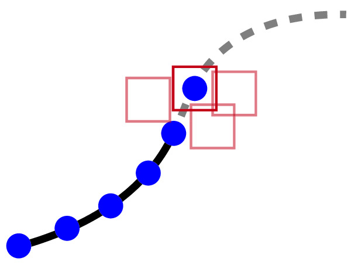
(tracing)
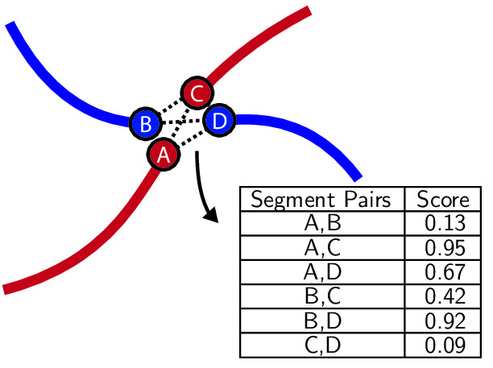
(merging)
Several algorithms leverage forms of tracing to extract paths (Huang et al., 2024; Viswanath et al., 2023; Fresnillo et al., 2023; De Gregorio et al., 2018). For example, De Gregorio et al., 2018 generates candidate paths by tracing through superpixels from endpoints, selecting paths based on color, curvature, and distance. Fresnillo et al., 2023 traces in both forward and backward directions for increased robustness. Huang et al., 2024 uses a skeleton map to trace between endpoints, while Viswanath et al., 2023 introduces a data-driven approach, using a UNet-based trace predictor to produce probability heatmaps that guide the tracing process.
Merging-based algorithms use cost functions to evaluate and merge candidate segment pairs (Choi et al., 2023; Kicki et al., 2023; Keipour et al., 2022; Caporali et al., 2022; Caporali et al., 2022; Caporali et al., 2023). Across these approaches, the choice of metric varies substantially. A data-driven metric in Caporali et al., 2022 employs a CNN to assess superpixel similarity, whereas Caporali et al., 2022 uses a similarity network to compare sampled feature vectors. In contrast, analytical metrics such as curvature, distance, and shape smoothness are adopted in Choi et al., 2023, Keipour et al., 2022, and Caporali et al., 2023, with Choi et al., 2023 introducing a merging criterion based on bending energy.
In practice, merging is often performed over an intermediate structural representation of the object. A common implementation relies on a skeleton map, as initial segments can be formed by linking skeleton pixels with two neighbors, then resolving intersections via merging. This approach is employed by Keipour et al., 2022, Choi et al., 2023, and Caporali et al., 2022. In Caporali et al., 2022, superpixels replace the skeleton map but apply a similar merging strategy exploiting the segmentation masks. In Caporali et al., 2023, the sparsity of nodes prevents standard merging, so each node is merged individually with its neighbors. Unlike tracing, this merging is performed concurrently across all nodes, based on both their similarity and spatial proximity.
Unlike merging and tracing methods, Yan et al., 2020 uses a neural network to hierarchically update DLO segment endpoints and predict new center points, progressively increasing the granularity of the shape representation.
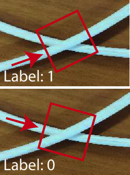
(patch classifier)
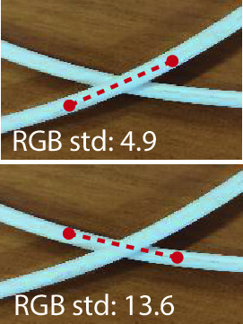
(color deviation)
Crossing Order Determination. In cases of crossings or intersections, e.g. whether between different DLOs or loops of the same DLO, determining which segment lies on top is essential for manipulation tasks, such as deciding which DLO to move (see Sec. 5.4). The two common strategies for this, illustrated in Fig. 5, are data-driven patch classifier methods and analytical color deviation techniques.
CNN classifiers based on ResNet architectures analyze masked image crops centered on the crossing region to predict which segment lies on top (Caporali et al., 2022; Viswanath et al., 2023). To enhance robustness and ensure rotation invariance, the crops are often rotated or oriented so that the DLO segments are aligned consistently before classification (Huang et al., 2024).
Alternatively, analytical methods determine order by comparing the color variability along each path near the crossing, selecting the segment with lower RGB channel variance as the top (Caporali et al., 2022; Caporali et al., 2023). This approach is further refined by using blurred images to reduce glare effects (Choi et al., 2023).
Table 3. Overview of DLO tracking methods grouped by non-rigid registration techniques and learning-based approaches.
| Group | Method | Based On | Key Aspects |
|---|---|---|---|
| Registration-based | CPD+Physics (Tang et al., 2017) | CPD | DLO physical simulator |
| SPR (Tang and Tomizuka, 2022) | CPD + Physics | Regularization using local structure and global topology | |
| CDCPD (Chi and Berenson, 2019) | GLTP | Enforces DLO stretching limits; robust recovery from tracking failures | |
| CDCPD2 (Wang et al., 2021) | CDCPD | Handles tip, self, and severe occlusions via constraint incorporation | |
| CPD+FEM (Wang and Yamakawa, 2022) | CPD | FEM model integrating local structure, global topology, and material properties | |
| TrackDLO (Xiang et al., 2023) | GLTP | Addresses tip and self-occlusions using geodesic distances | |
| TSL (Luo and Demiris, 2025) | CDCP2 | Shoelace tracking | |
| Learning-based | (Yang et al., 2022) | -- | Low-dimensional embedding space via autoencoder |
| (Lv et al., 2023) | -- | Two-branch encoding network combined with modified CPD | |
| (Caporali and Palli, 2025) | -- | Multiview triangulation combined with Cosserat model of DLO behavior |
3.1.3 3D Shape Estimation.
While estimating the 2D shape of a DLO (see Sec. 3.1.2) provides valuable information, it is often insufficient for effective grasping and manipulation. The ultimate objective is to recover the DLO’s configuration in 3D space. However, direct 3D shape estimation remains less explored than its 2D counterpart. Indeed, a common strategy involves first estimating the 2D shape and subsequently projecting it into Cartesian space using depth information (Kicki et al., 2023; Sun et al., 2024).
One reason for the limited number of 3D shape estimation methods is the challenge posed by current sensing technologies. As highlighted in a benchmark of 3D camera systems for DLO perception (Cop et al., 2021), only high-end depth sensors can reliably capture the shape of thin, cylindrical objects like DLOs. These high-performance cameras tend to be bulky—making them difficult to mount on robot end-effectors—and their cost restricts widespread use in research settings. In contrast, popular robotic cameras such as the Kinect Azure and Intel RealSense often struggle to detect DLOs with diameters under 1 cm.
To mitigate the impact of depth sensor noise, (Sun et al., 2024) incorporates a smoothness prior using a discrete elastic rod model (see Sec. 2). Reliable 3D detection of DLOs is also explored in (Caporali et al., 2023), which leverages a multi-view stereo approach using a single 2D camera in combination with 2D shape detection algorithms (see Sec. 3.1.2). This method proves effective for reconstructing the 3D shape of DLOs for grasping and manipulation tasks. However, achieving accurate results requires detecting multiple, closely spaced DLO segments, making the process time-consuming. Additionally, the approach is limited to static scenes, restricting its use in dynamic environments.
3.1.4 Tracking.
DLOs are theoretically characterized by an infinite number of degrees of freedom, which makes tracking challenging, particularly under real-time constraints. In practice, they are discretized into a finite set of key nodes (as described in Sec. 2), and tracking (in its basic form) reduces to estimating the positions of these nodes over time while handling potential occlusions (as in Fig. 6). These occlusions may result from self-occlusion within the DLO or from external factors, such as interactions with a robotic manipulator.
A wide range of methods have been proposed to address the challenges of DLO tracking, which vary in their modeling assumptions, algorithmic foundations, and robustness to occlusions. Table 3 categorizes these methods into two main groups: registration-based approaches, primarily built upon non-rigid registration techniques such as Coherent Point Drift (CPD Myronenko and Song, 2010) and Global-Local Topology Preservation (GLTP Ge et al., 2014), and learning-based methods.
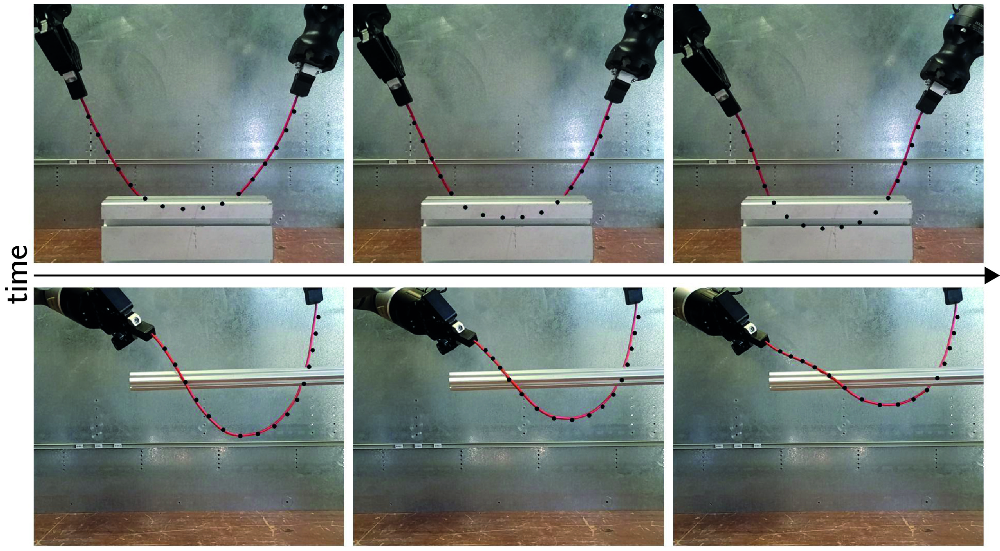
Registration-based Methods. A widely adopted approach to DLO tracking formulates the task as a point-set registration problem, leveraging algorithms such as CPD and GLTP. In CPD, registration is framed as a probability density estimation problem, where one point set—the Gaussian Mixture Model (GMM) centroids, typically represents the estimated positions of key nodes along the DLO, and the other set consists of observed data points from the current camera frame. A key feature of CPD is the enforcement of coherent motion among the GMM centroids, ensuring smooth and physically plausible deformations (Yuille and Grzywacz, 1989). GLTP extends CPD by introducing a local regularization term based on locally linear embedding (Roweis and Saul, 2000), complementing CPD's global regularization.
While CPD and GLTP are effective for non-rigid registration, they do not inherently incorporate physical constraints or domain knowledge specific to deformable objects. To address this limitation, several DLO tracking approaches have extended these algorithms by integrating physics-based simulators or introducing regularization techniques tailored to DLO behavior. As summarized in Table 3, each registration-based approach enhances the core registration pipeline with DLO-specific constraints or priors to improve tracking accuracy and robustness. A common direction involves embedding physical knowledge, either through a physics simulator (Tang et al., 2017; Tang and Tomizuka, 2022; Luo and Demiris, 2025) or an analytical model from Sec. 2 (Wang and Yamakawa, 2022). Alternatively, constraints based on stretching limits (Chi and Berenson, 2019) or geometric/topological properties (Wang et al., 2021; Xiang et al., 2023) are employed to improve robustness and accuracy.
Learning-based Methods. Recent work in DLO tracking has explored data-driven approaches (Yang et al., 2022; Lv et al., 2023; Caporali and Palli, 2025), as shown at the bottom of Table 3. These methods aim to overcome challenges such as high dimensionality, occlusions, or the need for explicit physical modeling.
In (Yang et al., 2022), an autoencoder is used to learn a low-dimensional embedding of DLO states, enabling efficient tracking via particle filtering in the latent space. This approach captures physically plausible behaviors directly from data, without requiring a physical simulator or regularization during deployment. (Lv et al., 2023) employs a PointNet++ encoder to extract features from input point clouds, followed by a two-branch fusion strategy: a regression branch that models global DLO topology, and a voting branch that estimates local geometric offsets. Thus, a modified CPD algorithm fuses both branches.
A key advantage of these learning-based methods is their independence from initial DLO state estimates, simulators, or hand-crafted constraints at inference time. Instead, they encode physical priors during training. For instance, (Yang et al., 2022) uses synthetic data matching specific DLO properties, though performance may degrade when real-world behavior deviates from the training distribution. In contrast, (Lv et al., 2023) applies domain randomization to improve generalization to real-world scenarios.
Tracking methods often require high-quality depth or point cloud data, difficult to obtain given the small size of DLOs (Cop et al., 2021), and depend on pre-segmented inputs, which are challenging to acquire outside controlled settings. To address these issues, (Caporali and Palli, 2025) proposes using multiple 2D images for segmentation in cluttered scenes (see Secs. 3.1.2 and 3.1.3) combined with a learned physics-based DLO model to handle occlusions, enabling estimation and tracking of the 3D DLO shape during manipulation. However, this approach depends on knowledge of the robot’s actions and has limited use of tracking history.
3.1.5 Vision-based Perception of Suture Threads.
A notable subclass of DLOs is represented by suture threads, which are extensively studied in the field of surgical robotics. These threads are typically inextensible, have very small diameters, and are often connected to a curved metal needle. Suture threads pose unique challenges for vision-based perception due to their extremely thin structure. Indeed, in typical surgical imaging setups, the thread amounts to roughly 0.25% of the total image width (Joglekar et al., 2023). This makes them significantly more difficult to detect and track than larger deformable objects such as ropes or cables. An overview of perception methods for suture threads is provided here, while a broader discussion on robotic suturing for manipulation tasks is presented in Sec. 5.5.
Various methods have been proposed for reconstructing thread geometry from visual input, including stereo-based curve fitting using non-uniform rational B-splines (Jackson et al., 2018; Schorp et al., 2023), shortest-path computations between thread endpoints (Lu et al., 2020; Lu et al., 2022), and minimum variation splines (Joglekar et al., 2023). These methods typically incorporate prior knowledge of thread continuity and curvature to compensate for weak visual cues. Many treat the problem as a curve-fitting task (Jackson et al., 2018; Schorp et al., 2023). Some connections with the methods discusses in Sec. 3.1.2 are also present, e.g. the cost-based path growth in (Jackson et al., 2018) closely resembles the tracing approach.
Learning-based techniques have also been introduced to enhance suture perception. (Lu et al., 2020) applies transfer learning to improve generalization, while (Lu et al., 2022) proposes a semi-supervised segmentation approach to improve thread detection with limited labeled data.
Some systems require manual initialization, such as seeding a starting point (Jackson et al., 2018; Lu et al., 2022). In contrast, more recent methods achieve fully automatic suture reconstruction without user input (Joglekar et al., 2023). Both (Joglekar et al., 2023) and (Lu et al., 2022) also address a critical challenge in stereo-based perception of false correspondences across stereo image pairs, especially due to the thread being tangent to the epipolar line (Joglekar et al., 2023).
A key challenge in suture thread perception is the lack of standardized benchmarks and public datasets (see Sec. 6.2), which are especially essential in data-scarce clinical settings where real-world samples are limited (Joglekar et al., 2023).
3.1.6 Vision-based Perception of DMLOs.
As a subclass of DLOs, DMLOs share many of the same properties but are uniquely characterized by the presence of branch points, where two or more linear components converge (Caporali et al., 2025). Extending DLOs vision-based perception methods to DMLOs introduces additional challenges, primarily due to the complexity of bifurcations. Moreover, the integration of rigid elements such as plugs, clips, and connectors further complicates the visual processing and interpretation of these structures.
Most research on DMLOs centers on automotive wiring harnesses, highlighting the need for advanced automation. Nguyen and Franke, 2021 uses data-driven segmentation methods (see Sec. 3.1.1) for optical inspection, though with limited manually annotated data. In follow-up work (Nguyen et al., 2022), synthetic data from CAD models is introduced, demonstrating its effectiveness and benefits over limited real data. In (Kicki et al., 2021), DMLO branch classification is explored using a manually annotated, small-scale dataset, with data augmentation applied to counter limited data availability.
Several works represent DMLOs as graphs generated around branch points (Zürn et al., 2023; Zürn et al., 2023; Zürn et al., 2022). For instance, (Zürn et al., 2023) estimates correspondences between a known (CAD-based) directed topology and an image-derived undirected graph. (Zürn et al., 2022) introduces a DMLO tracking method using rigid and non-rigid registration but assumes non-overlapping configurations. (Zürn et al., 2023) addresses branch point detection with a data-driven method and semi-manual annotation, though its evaluation is limited to a single user and DMLO type.
Caporali et al., 2025 presents a learning-based graph method for representing DMLO topology using graph neural networks trained on synthetic data. The method’s effectiveness is demonstrated in a dual-arm disentangling task (see Sec. 5.4). However, since it relies solely on the segmented mask of the scene, it remains vulnerable to significant errors caused by mask inaccuracies.
Despite significant progress in DMLO perception, future research should focus on developing systems that are not only accurate but also adaptable, scalable, and robust to the inherent variability of real-world environments, as discussed in Sec. 6.2.
3.1.7 Emerging Vision-related Tasks.
Recent advances in computer vision have enabled the exploration of novel tasks in the context of DLO perception.
Multi-modal Segmentation. Few works have explored multi-modal approaches for DLO segmentation. The Segment Anything Model (SAM) (Kirillov et al., 2023) has been applied in zero-shot settings. For example, (Sun et al., 2024) prompts SAM using generic keywords such as ``ropes'' or ``cables'', but requires several post-processing steps to achieve satisfactory segmentation masks. (Caporali et al., 2024) leverages both visual and textual modalities to segment only the target DLO. It introduces two main improvements over prior works: 1) task-specific prompts for accurate target-object segmentation, and 2) a lightweight, real-time capable architecture, unlike the larger foundation models.
Interactive Segmentation. It is the process of leveraging forceful physical interactions with objects to enhance and inform the perception process. (Bohg et al., 2017; Weng et al., 2024). (Holešovskỳ et al., 2024) propose an optical flow-based approach for segmenting moving DLOs, inspired by how humans use motion—specifically poking—to distinguish and separate tangled cables. They also introduce an automatically annotated dataset with instance and motion ground truth. Due to reliance on flow magnitude thresholding, the method may merge multiple moving cables. To address this, (Holešovskỳ et al., 2025) incorporates motion correlation and interactive grasping strategies to improve accuracy. The approach is evaluated on small motions and thick DLOs, given vision limitations in more complex scenarios (see Sec. 3.1.3).
3.2 Tactile-based Perception
Vision-based perception can be challenging in tight spaces and with occlusions. Moreover, when the robot is actively manipulating the object, having additional information on the grasp itself becomes crucial. Tactile sensors represent a valuable alternative to overcome the limitations of vision-based perception of DLOs. Concerning DLOs' touch perception, three types of tactile sensor technologies are usually employed: photoreflector-based (Pirozzi and Natale, 2018; Palli and Pirozzi, 2019; Cirillo et al., 2021; Zanella et al., 2019); camera-based (Wilson et al., 2023; She et al., 2021); and capacitive (Monguzzi et al., 2023; Monguzzi et al., 2024).
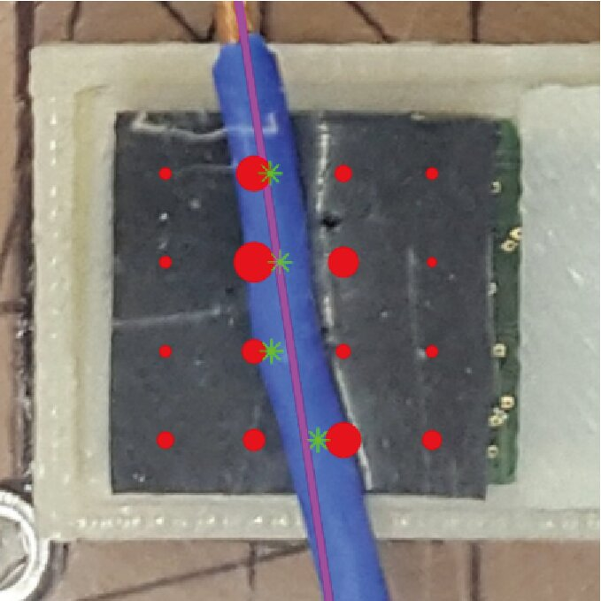
(photoreflector-based)
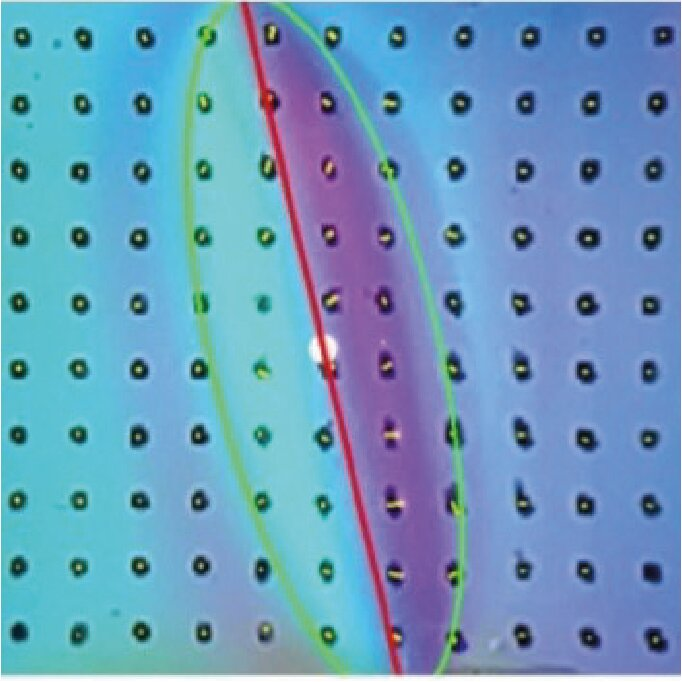
(camera-based)
Photoreflector tactile sensors are employed in (Pirozzi and Natale, 2018) and (Palli and Pirozzi, 2019) for automatic wiring tasks. Assuming a known DLO diameter, the tip of a grasped DLO is estimated by modeling the grasped section with a quadratic function and the external section with a linear segment. In contrast, (Cirillo et al., 2021) proposes a data-driven method to estimate the DLO diameter, leveraging both tactile measurements and gripper closure levels to classify diameters and generalize across varying grasp levels. Additionally, tactile sensing is also applied to estimate external forces acting on the grasped DLO through a data-driven approach based on RNNs (Zanella et al., 2019).
Camera-based tactile sensors allow for the estimation of pose and friction force (She et al., 2021; Wilson et al., 2023). Pose estimation is achieved through processing the depth image and applying Principal Component Analysis (PCA). The friction force is determined by computing the marker flow on the tactile surface, with the estimated displacement assumed to be proportional to the friction force. Additionally, (She et al., 2021) introduces grasp quality, assessed by evaluating the area of the tactile imprint in relation to a predefined threshold boundary.
Capacitive tactile sensors are employed in (Monguzzi et al., 2023; Monguzzi et al., 2024), where capacitance measurements are exploited to estimate DLO diameter and alignment.
Both photoreflector and capacitive-based tactile sensors provide low-resolution output (usually a or map), unlike high-resolution camera-based sensors that generate depth-image-like outputs (see Fig. 7). However, photoreflector and capacitive sensors are generally more compact and slim, making them better suited for use in confined or tight spaces where larger camera-based sensors may not fit.
Several works combine vision and tactile sensing to overcome their individual limitations in DLO manipulation. De Gregorio et al., 2018 employs vision for tip detection and tactile sensors to assess grasp quality. In Pecyna et al., 2022, vision and tactile data are integrated within a manipulation framework, highlighting the importance of fusing both sensing modalities.
3.3 Proximity and Force/Torque Sensing
3.3.1 Proximity Sensing.
3.3.2 Force/Torque Sensing.
For purely elastic DLOs, each equilibrium configuration of a Kirchhoff elastic rod corresponds to a unique point in a subset of \(^6\), fully characterized by the force and torque exerted at the base of the DLO (Bretl and McCarthy, 2014). Building on this foundational concept, several works (Mishani and Sintov, 2021; Mishani and Sintov, 2023) develop manipulation frameworks that rely exclusively on force/torque (F/T) sensing to estimate the shape of a DLO held by a dual-arm robotic system, achieving 3D shape estimation similar to that in Sec. 3.1.3, but without relying on vision-based sensing.
Initially introduced in Mishani and Sintov, 2021, the framework assumes a quasi-static DLO in a straight, undeformed configuration with high stiffness and inextensibility. Leveraging the mapping between F/T measurements and DLO configurations derived from (Bretl and McCarthy, 2014), a neural network is trained to predict the shape from sensor data. However, this method requires prior estimation of the DLO’s mechanical properties and exhibits reduced accuracy when the underlying assumptions are violated. To address these challenges, Mishani and Sintov, 2023 proposes an enhanced approach using an autoencoder neural network that directly maps F/T sensor readings to DLO shapes, significantly improving both estimation accuracy and computational efficiency. A key limitation remains the necessity to retrain the model for each new DLO.